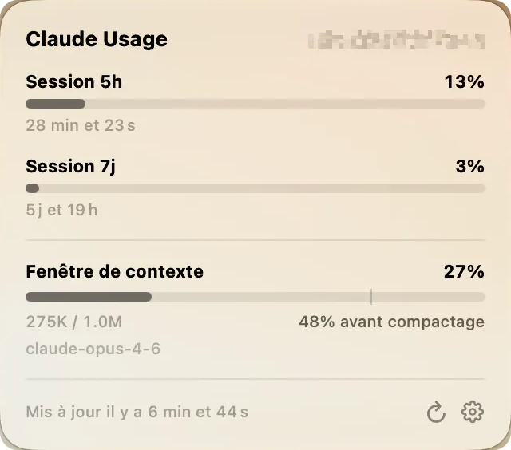

Votre usage Claude,
toujours sous les yeux

Sessions 5 h et 7 j
Fenêtre de contexte
Alerte avant la limite
Français & English
Questions
macOS refuse d'ouvrir l'app
L'app n'est pas signée par un certificat Apple Developer (99 $ par an) : au premier lancement macOS propose de la mettre à la corbeille. Cliquer « Terminé ».
Puis ouvrir Réglages Système > Confidentialité et sécurité, descendre tout en bas, cliquer « Ouvrir quand même » et confirmer. C'est à faire une seule fois. En Terminal : xattr -cr /Applications/Claude\ Usage\ Mini.app.
Comment connecter mon compte ?
Cliquer l'icône dans la barre de menus, puis « Se connecter avec Claude ». Le navigateur s'ouvre pour autoriser l'app en OAuth ; il reste à recoller le jeton code#state dans l'app.
Le guide d'installation détaille chaque étape en images.
D'où viennent les chiffres ?
L'usage vient de l'API OAuth d'Anthropic (/api/oauth/usage), la même source que le tableau de bord officiel de Claude.
La fenêtre de contexte est estimée en lisant vos fichiers de session Claude Code, en local, dans ~/.claude/projects/. Rien n'est envoyé ailleurs.
Quelle configuration ?
macOS 26 Tahoe minimum. Pour compiler soi-même : Xcode 26+ (Swift 6.2), puis ./build-app.sh.
C'est payant ?
Non : gratuit et open source, sous licence BSD-2-Clause. Le projet part de claude-usage-bar de Krystian.